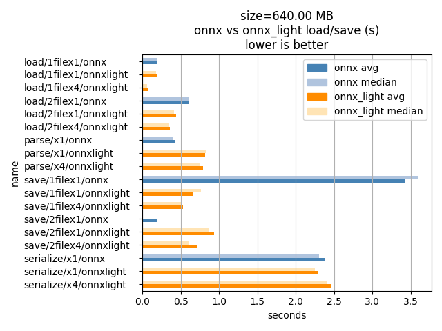

Note
Go to the end to download the full example code.
Measures loading and saving time for an ONNX model#
This script builds a small ONNX model and benchmarks the time to load
and save it using onnx and onnx_light.onnx.
It only compares the Python bindings; the model structure is identical
in both cases.
The onnx_light.onnx implementation does not depend on protobuf and
therefore avoids the overhead of the protobuf serialization layer.
It also supports parallel loading of tensor weights through the
parallel keyword and loading models stored with external data.
onnx,onnxlight: useonnxoronnx-light1filex1: saves in a single file with 1 thread1filex4: saves in a single file with 4 threads2filex1: saves in a file and another for external data with 1 thread2filex4: saves in a file and another for external data with 4 threads
import os
import shutil
import time
import numpy as np
import pandas
import onnx
import onnx.helper as oh
import onnx.numpy_helper as onh
import onnx_light.onnx as onnxl
Build a small synthetic ONNX model#
We create a model with several Gemm nodes and large initializers so
that the load/save times are measurable.
N_INIT = 40
DIM = 256 if os.environ.get("UNITTEST_GOING") == "1" else 2048
def make_model(n_init: int = N_INIT, dim: int = DIM) -> onnx.ModelProto:
"""Returns a synthetic ONNX model with *n_init* Gemm initializers of size *dim*."""
initializers = []
nodes = []
inputs = [oh.make_tensor_value_info("X", onnx.TensorProto.FLOAT, [None, dim])]
prev = "X"
for i in range(n_init):
weight_name = f"W{i}"
out_name = f"Y{i}"
w = np.random.randn(dim, dim).astype(np.float32)
initializers.append(onh.from_array(w, name=weight_name))
nodes.append(oh.make_node("Gemm", [prev, weight_name], [out_name], transB=1))
prev = out_name
outputs = [oh.make_tensor_value_info(prev, onnx.TensorProto.FLOAT, [None, dim])]
graph = oh.make_graph(nodes, "bench_graph", inputs, outputs, initializer=initializers)
model = oh.make_model(graph, opset_imports=[oh.make_opsetid("", 18)], ir_version=9)
return model
model = make_model()
size_bytes = model.ByteSize()
print(f"Model size: {size_bytes / 2 ** 20:.3f} MB")
Model size: 640.002 MB
Write the model to a temporary file#
tmp_dir = "temp_plot_onnx_time"
if not os.path.exists(tmp_dir):
os.mkdir(tmp_dir)
onnx_path = os.path.join(tmp_dir, "bench.onnx")
onnx.save(model, onnx_path)
file_size = os.path.getsize(onnx_path)
print(f"File size : {file_size / 2 ** 20:.3f} MB")
File size : 640.002 MB
Benchmark helper#
def measure(name: str, fn, n: int = 5) -> dict:
"""Runs *fn* *n* times and records timing statistics."""
times = []
for _ in range(n):
t0 = time.perf_counter()
fn()
times.append(time.perf_counter() - t0)
return {
"name": name,
"median": float(np.median(times)),
"avg": float(np.mean(times)),
"min": float(np.min(times)),
}
def print_stats(name: str, stats: dict) -> None:
"""Formats and prints the average and median timing values in milliseconds."""
print(f"{name:<35} avg={stats['avg'] * 1e3:.1f} ms median={stats['median'] * 1e3:.1f} ms")
data = []
Load with onnx#
load/1filex1/onnx avg=189.9 ms median=184.3 ms
Load with onnx_light.onnx#
load/1filex1/onnxlight avg=185.9 ms median=182.3 ms
Load with onnx_light.onnx using parallel tensor loading#
load/1filex4/onnxlight avg=76.7 ms median=63.6 ms
SerializeToString comparison#
opts_serial_x4 = onnxl.SerializeOptions()
opts_serial_x4.parallel = True
opts_serial_x4.num_threads = 4
def _serialize_onnx() -> bytes:
"""Serializes the ONNX model to bytes."""
return onx.SerializeToString()
def _serialize_onnxlight() -> bytes:
"""Serializes the onnx_light model to bytes."""
return onxl.SerializeToString()
def _serialize_onnxlight_x4() -> bytes:
"""Serializes the onnx_light model in parallel to bytes."""
return onxl.SerializeToString(opts_serial_x4)
assert len(_serialize_onnx()) > 0
assert len(_serialize_onnxlight()) > 0
assert len(_serialize_onnxlight_x4()) > 0
data.append(measure("serialize/x1/onnx", _serialize_onnx))
print_stats("serialize/x1/onnx", data[-1])
data.append(measure("serialize/x1/onnxlight", _serialize_onnxlight))
print_stats("serialize/x1/onnxlight", data[-1])
data.append(measure("serialize/x4/onnxlight", _serialize_onnxlight_x4))
print_stats("serialize/x4/onnxlight", data[-1])
serialize/x1/onnx avg=2383.8 ms median=2305.6 ms
serialize/x1/onnxlight avg=2287.5 ms median=2252.0 ms
serialize/x4/onnxlight avg=2457.5 ms median=2416.7 ms
ParseFromString comparison#
serialized_onnx = onx.SerializeToString()
serialized_onnxlight = onxl.SerializeToString()
opts_parse_x4 = onnxl.ParseOptions()
opts_parse_x4.parallel = True
opts_parse_x4.num_threads = 4
def _parse_onnx() -> onnx.ModelProto:
"""Parses ONNX bytes into a ModelProto."""
parsed = onnx.ModelProto()
parsed.ParseFromString(serialized_onnx)
return parsed
def _parse_onnxlight() -> onnxl.ModelProto:
"""Parses onnx_light bytes into a ModelProto."""
parsed = onnxl.ModelProto()
parsed.ParseFromString(serialized_onnxlight)
return parsed
def _parse_onnxlight_x4() -> onnxl.ModelProto:
"""Parses onnx_light bytes in parallel into a ModelProto."""
parsed = onnxl.ModelProto()
parsed.ParseFromString(serialized_onnxlight, opts_parse_x4)
return parsed
parsed_onnx = _parse_onnx()
assert parsed_onnx.ir_version == onx.ir_version
assert len(parsed_onnx.graph.node) == len(onx.graph.node)
parsed_onnxlight = _parse_onnxlight()
assert parsed_onnxlight.ir_version == onxl.ir_version
assert len(parsed_onnxlight.graph.node) == len(onxl.graph.node)
parsed_onnxlight_x4 = _parse_onnxlight_x4()
assert parsed_onnxlight_x4.ir_version == onxl.ir_version
assert len(parsed_onnxlight_x4.graph.node) == len(onxl.graph.node)
data.append(measure("parse/x1/onnx", _parse_onnx))
print_stats("parse/x1/onnx", data[-1])
data.append(measure("parse/x1/onnxlight", _parse_onnxlight))
print_stats("parse/x1/onnxlight", data[-1])
data.append(measure("parse/x4/onnxlight", _parse_onnxlight_x4))
print_stats("parse/x4/onnxlight", data[-1])
parse/x1/onnx avg=432.3 ms median=391.9 ms
parse/x1/onnxlight avg=817.3 ms median=838.1 ms
parse/x4/onnxlight avg=794.2 ms median=754.2 ms
Save with onnx#
save/1filex1/onnx avg=3426.5 ms median=3594.0 ms
Save with onnx using external data#
This is the slow path: Python iterates every tensor, creates a numpy intermediate, and calls Python I/O for each weight blob.
out_onnx_ext = os.path.join(tmp_dir, "out_onnx_ext.onnx")
out_onnx_ext_location = "out_onnx_ext.data"
data.append(
measure(
"save/2filex1/onnx",
lambda: onnx.save_model(
onx,
out_onnx_ext,
save_as_external_data=True,
all_tensors_to_one_file=True,
location=out_onnx_ext_location,
),
)
)
print_stats("save/2filex1/onnx", data[-1])
save/2filex1/onnx avg=188.3 ms median=0.4 ms
Save with onnx_light.onnx#
save/1filex1/onnxlight avg=659.9 ms median=766.2 ms
Save with onnx_light.onnx parallelized#
out_onnxl_x4 = os.path.join(tmp_dir, "out_onnxlight_x4.onnx")
data.append(
measure(
"save/1filex4/onnxlight",
lambda: onnxl.save(onxl_x4, out_onnxl_x4, parallel=True, num_threads=4),
)
)
print_stats("save/1filex4/onnxlight", data[-1])
save/1filex4/onnxlight avg=530.3 ms median=507.8 ms
Save with onnx_light.onnx using external data#
All work is done in C++: PopulateExternalData attaches metadata once,
SerializeToStream routes large raw_data blobs directly to the
weights file via TwoFilesWriteStream, and ClearExternalData
restores the in-memory model. No numpy arrays are created.
out_ext = os.path.join(tmp_dir, "out_ext.onnx")
out_ext_data = out_ext + ".data"
data.append(
measure("save/2filex1/onnxlight", lambda: onnxl.save(onxl, out_ext, location=out_ext_data))
)
print_stats("save/2filex1/onnxlight", data[-1])
save/2filex1/onnxlight avg=933.3 ms median=869.5 ms
Save with onnx_light.onnx using external data parallelized#
out_ext_x4 = os.path.join(tmp_dir, "out_ext_x4.onnx")
out_ext_x4_data = out_ext + ".data"
data.append(
measure(
"save/2filex4/onnxlight",
lambda: onnxl.save(
onxl, out_ext_x4, location=out_ext_x4_data, parallel=True, num_threads=4
),
)
)
print_stats("save/2filex4/onnxlight", data[-1])
save/2filex4/onnxlight avg=709.0 ms median=604.9 ms
Load with onnx using external data#
Reload the model previously saved with external data using onnx.load.
out_onnx_ext_data = os.path.join(tmp_dir, out_onnx_ext_location)
data.append(
measure("load/2filex1/onnx", lambda: onnx.load(out_onnx_ext, load_external_data=True))
)
print(f"load/2filex1/onnx avg={data[-1]['avg'] * 1e3:.1f} ms")
load/2filex1/onnx avg=614.1 ms
Load with onnx_light.onnx using external data#
Reload the same external-data model using onnxl.load.
data.append(
measure(
"load/2filex1/onnxlight", lambda: onnxl.load(out_onnx_ext, location=out_onnx_ext_data)
)
)
print(f"load/2filex1/onnxlight avg={data[-1]['avg'] * 1e3:.1f} ms")
load/2filex1/onnxlight avg=436.9 ms
Load with onnx_light.onnx using external data and parallel tensor loading#
Combine external-data loading with parallel=True for maximum throughput.
data.append(
measure(
"load/2filex4/onnxlight",
lambda: onnxl.load(
out_onnx_ext, location=out_onnx_ext_data, parallel=True, num_threads=4
),
)
)
print(f"load/2filex4/onnxlight avg={data[-1]['avg'] * 1e3:.1f} ms")
load/2filex4/onnxlight avg=360.7 ms
Results#
df = pandas.DataFrame(data).set_index("name").sort_index()
print(df)
df = df.sort_index(ascending=False)
median avg min
name
load/1filex1/onnx 0.184281 0.189936 0.159536
load/1filex1/onnxlight 0.182288 0.185897 0.168153
load/1filex4/onnxlight 0.063641 0.076702 0.051331
load/2filex1/onnx 0.608243 0.614063 0.496980
load/2filex1/onnxlight 0.416729 0.436897 0.402668
load/2filex4/onnxlight 0.351475 0.360678 0.323006
parse/x1/onnx 0.391917 0.432329 0.350165
parse/x1/onnxlight 0.838133 0.817337 0.712054
parse/x4/onnxlight 0.754202 0.794156 0.706678
save/1filex1/onnx 3.594013 3.426526 2.969855
save/1filex1/onnxlight 0.766226 0.659946 0.348268
save/1filex4/onnxlight 0.507830 0.530306 0.452359
save/2filex1/onnx 0.000449 0.188291 0.000346
save/2filex1/onnxlight 0.869463 0.933332 0.730822
save/2filex4/onnxlight 0.604858 0.709046 0.416015
serialize/x1/onnx 2.305554 2.383812 2.158288
serialize/x1/onnxlight 2.251970 2.287495 1.856651
serialize/x4/onnxlight 2.416742 2.457526 1.705073
Plot the results.
Both the average and median are shown for each operation.
Bars are colored by library: blue family for onnx, orange family for
onnx_light. Solid shades represent the average; lighter shades the median.
import matplotlib.patches as mpatches
_onnx_avg = "steelblue"
_onnx_med = "lightsteelblue"
_onnx_light_avg = "darkorange"
_onnx_light_med = "moccasin"
ax = df[["avg", "median"]].plot.barh(
title=f"size={file_size / 2 ** 20:.2f} MB\nonnx vs onnx_light load/save (s)\nlower is better",
xlabel="seconds",
legend=False,
)
# Row names use "onnxlight" (no underscore) as recorded during benchmarking.
row_names = df.index.tolist()
for container, col in zip(ax.containers, ["avg", "median"]):
for bar, name in zip(container, row_names):
if "onnxlight" in name:
bar.set_facecolor(_onnx_light_avg if col == "avg" else _onnx_light_med)
else:
bar.set_facecolor(_onnx_avg if col == "avg" else _onnx_med)
ax.legend(
handles=[
mpatches.Patch(color=_onnx_avg, label="onnx avg"),
mpatches.Patch(color=_onnx_med, label="onnx median"),
mpatches.Patch(color=_onnx_light_avg, label="onnx_light avg"),
mpatches.Patch(color=_onnx_light_med, label="onnx_light median"),
]
)
ax.grid(axis="x")
for label in ax.get_yticklabels():
label.set_horizontalalignment("left")
ax.tick_params(axis="y", pad=120)
ax.figure.tight_layout()
ax.figure.savefig("plot_onnx_time.png")

Cleanup#
Remove all temporary files created during the benchmark.
shutil.rmtree(tmp_dir, ignore_errors=True)
Total running time of the script: (1 minutes 41.926 seconds)